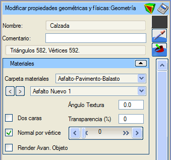
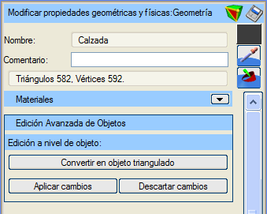
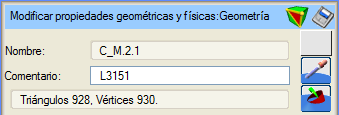
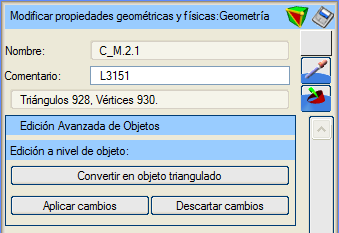
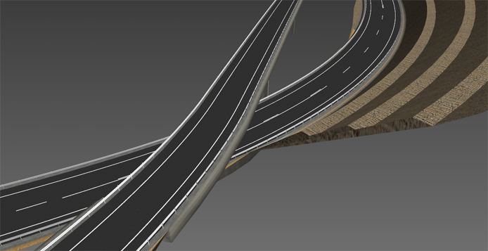

| |
|
Proje Nesneleri ve Parametrik Nesneler
|
|
Genel Bilgiler Proje Nesnelerinin Seçenekleri Proje Nesnelerinin Gelişmiş Düzenlemesi Parametrik Tanımlı Nesnelerin Seçenekleri Parametrik Tanımlı Nesnelerin Gelişmiş Düzenlemesi Genel Bilgiler Doğrusal Proje modülünden önceden oluşturulmuş nesneler, o modülde işlenen bilgilere göre tanımlandığından, Sanal 3B'de değiştirilme olanakları azdır. Yine de, onlarla ilgili tüm seçenekler aşağıda gösterilmektedir. Bu nesneler, proje elemanları (taşıt yolları, banketler, yarmalar, dolgular...) ve parametrik tanımlı elemanlardır (yol çizgileri, otokorkuluklar...). Proje Nesnelerinin Seçenekleri İsim: elemanın adıdır, ispol3dolc.cfg tanım dosyasından alınır. Yorum: bu proje nesnesine açıklayıcı bir yorum eklemeyi sağlar.  Proje nesnesinin "Gelişmiş Düzenleme" moduna girer. Proje nesnesinin "Gelişmiş Düzenleme" moduna girer. Proje nesnesini çeşitli formatlarda kaydetmeyi sağlar. Proje nesnesini çeşitli formatlarda kaydetmeyi sağlar. Ardından 3B görüntüleyicide seçilecek pikselin rengini nesneye atar. Ardından 3B görüntüleyicide seçilecek pikselin rengini nesneye atar. Ardından 3B görüntüleyicide seçilecek malzemenin özelliklerini nesneye atar. Ardından 3B görüntüleyicide seçilecek malzemenin özelliklerini nesneye atar.Renk: Renk butonu (bu örnekte gri) aracılığıyla ispol3dolc.cfg tanım dosyasında bir renk belirtilebilir. Üçgenler ve Köşe Noktaları: kürenin üçgen ve köşe noktası sayısını bildirir. Proje nesnelerinin sadece yorumu ve malzemesi değiştirilebilir. Varsayılan olarak uygulanan malzeme, ispol3dolc.cfg tanım dosyasından alınır. Malzeme Klasörü: küreye atanacak malzemelerin aranacağı sınıflandırma klasörünü seçmeyi sağlar. Seçilen klasöre bağlı olarak aşağıdaki malzeme seçici doldurulur. Malzeme Seçici: küreye uygulanacak malzemeyi seçmeyi sağlar. "<" ve ">" butonları, seçilen klasördeki malzeme listesinde sırayla gezinmeyi sağlar. Doku Açısı: seçilen malzeme bir doku içeriyorsa, dokunun uygulama düzlemi üzerindeki yönelimi değiştirilebilir. Varsayılan değer 0.0º'dir. Çift Yüzeyli: bu kutucuk işaretlendiğinde, kürenin üçgenlerinin her iki yüzeyinin de boyanacağı belirtilir. Bu, yalnızca kamera kürenin içine yerleştirilecekse kullanışlıdır. Üçgenleri çift yüzeyli boyamak zaman maliyetini artırır. Varsayılan olarak işaretli değildir. Şeffaflık (%): kürenin şeffaflık yüzdesini belirtir. Varsayılan olarak şeffaflık %0'dır, yani opaktır. Bu değer, altındaki yatay kaydırıcı ile de kontrol edilir. Köşe Başına Normal: bu kutucuk işaretlendiğinde, nesnenin her bir köşe noktasında hesaplanmış bir normal vektörü olduğu belirtilir; aksi takdirde her üçgen için bir normal vektör hesaplandığı kabul edilir. Bu nesnede, bu seçenek işaretliyken yüzeylerin kenarları yumuşatılmış görünür. Varsayılan olarak işaretlidir. Nesnenin Gelişmiş Render'ı: bu seçenekle, kürenin oluşturulmasında alışılmış OpenGL fonksiyonları yerine "shader"ların kullanılması belirtilir. Bu seçeneğin doğru çalışması, grafik donanımının bu "shader"ların kullanımını desteklemesine bağlıdır. Varsayılan olarak işaretli değildir. Proje Nesnelerinin Gelişmiş Düzenlemesi  Daha önce belirtilen nedenlerden dolayı, proje nesnelerinin gelişmiş düzenlemesinde sadece bir seçenek vardır. Üçgenlenmiş Nesneye Dönüştür: proje nesnesini normal bir 3B nesneye dönüştürür, artık bir proje nesnesi olarak değil, onu tanımlayan üçgenler bütünü olarak kabul edilir; diğer özellikler korunur. Özellikler menüsü, bir 3B nesne menüsüne dönüşür. Bir nesnenin proje nesnesi olması, programın ve dolayısıyla kullanıcının, bu nesnenin bir proje nesnesi olduğu gerçeğini dikkate alarak çalışmasına ve özelliklerini değiştirmesine olanak tanır: doku kaplama ve üzerine nesne yerleştirme şekli, bir proje nesnesi olmasına uygun şekilde ele alınır. Parametrik Tanımlı Nesnelerin Seçenekleri İsim: elemanın adıdır, çizgi tipinin tanım dosyasından alınır. Yorum: bu parametrik nesneye açıklayıcı bir yorum eklemeyi sağlar. Parametrik nesnenin "Gelişmiş Düzenleme" moduna girer. Parametrik nesneyi çeşitli formatlarda kaydetmeyi sağlar. Ardından 3B görüntüleyicide seçilecek pikselin rengini nesneye atar. Ardından 3B görüntüleyicide seçilecek malzemenin özelliklerini nesneye atar.Renk: Renk butonu (bu örnekte gri) aracılığıyla proje nesnesi için bir renk belirtilebilir, varsayılan değeri ispol3dolc.cfg tanım dosyasından alınır. Üçgenler ve Köşe Noktaları: kürenin üçgen ve köşe noktası sayısını bildirir. Parametrik tanımlı nesnelerin sadece yorumu değiştirilebilir, geri kalan bilgiler çizgi tipi olarak tanımlarından alınır. Parametrik Tanımlı Nesnelerin Gelişmiş Düzenlemesi  Daha önce belirtilen nedenlerden dolayı, parametrik nesnelerin gelişmiş düzenlemesinde sadece bir seçenek vardır. Üçgenlenmiş Nesneye Dönüştür: parametrik nesneyi normal bir 3B nesneye dönüştürür, artık bir parametrik nesne olarak değil, onu tanımlayan üçgenler bütünü olarak kabul edilir; diğer özellikler korunur. Özellikler menüsü, bir 3B nesne menüsüne dönüşür. 
Resimde, yol çizgileri ve otokorkuluklar içeren bir proje alanı gösterilmektedir. |